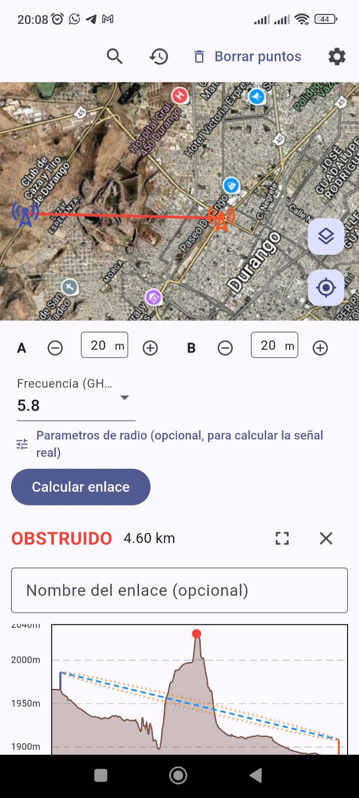
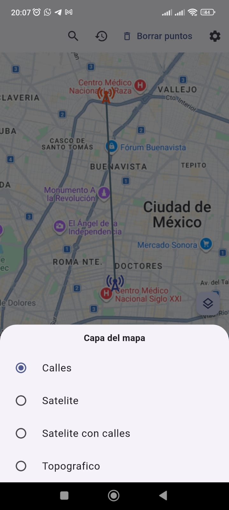
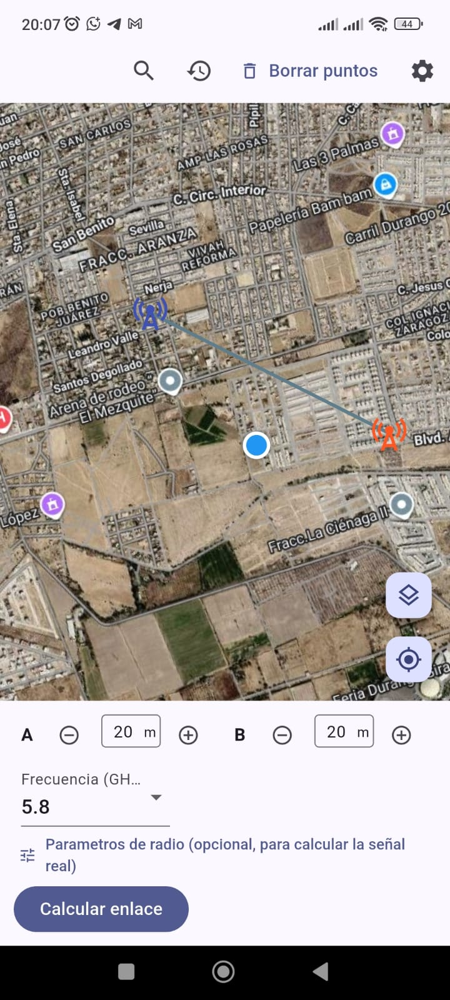
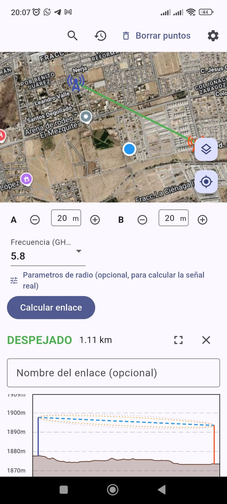

Link WISP Fresnel es una app para celular que calcula línea de vista, zona de Fresnel y presupuesto de enlace entre dos puntos — pensada para el trabajo de campo de quien instala radioenlaces todos los días.


Esta es la aplicación que les contaba. No soy programador — la hice con ayuda de inteligencia artificial, pero es completamente funcional. Espero que sea de su agrado.
Todo lo que normalmente se resuelve con calculadora, mapa impreso y hoja de cálculo, en un solo lugar.

Traza el enlace entre dos puntos y verifica visibilidad directa antes de subir a la torre.

Terreno real entre los dos extremos, para detectar obstrucciones antes de instalar.
Calcula si la zona está despejada y el presupuesto de enlace con el equipo real que vas a usar.
Genera un reporte listo para dejarle al cliente o al equipo de instalación.
Abre el link de descarga desde tu celular Android. Se descarga un archivo .apk.
Si Android pide permiso para "instalar apps de origen desconocido", actívalo solo para esta descarga — es normal en apps que no vienen de Play Store.
Abre el archivo descargado para instalarla y listo, ya puedes calcular tu primer enlace.